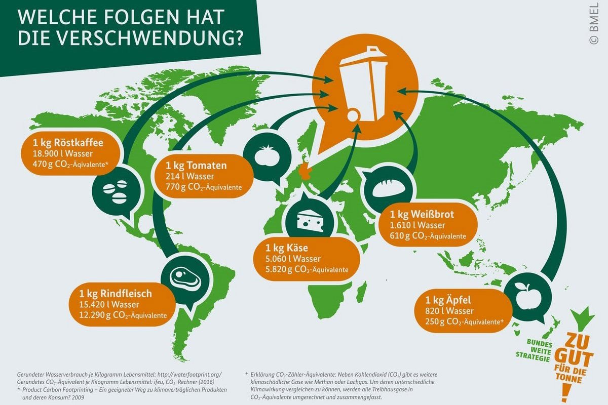
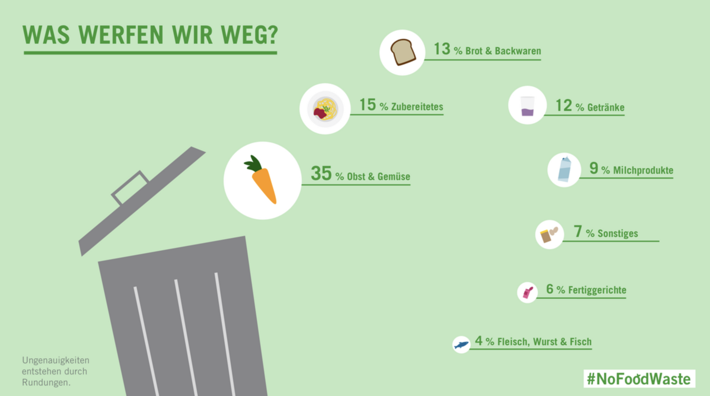
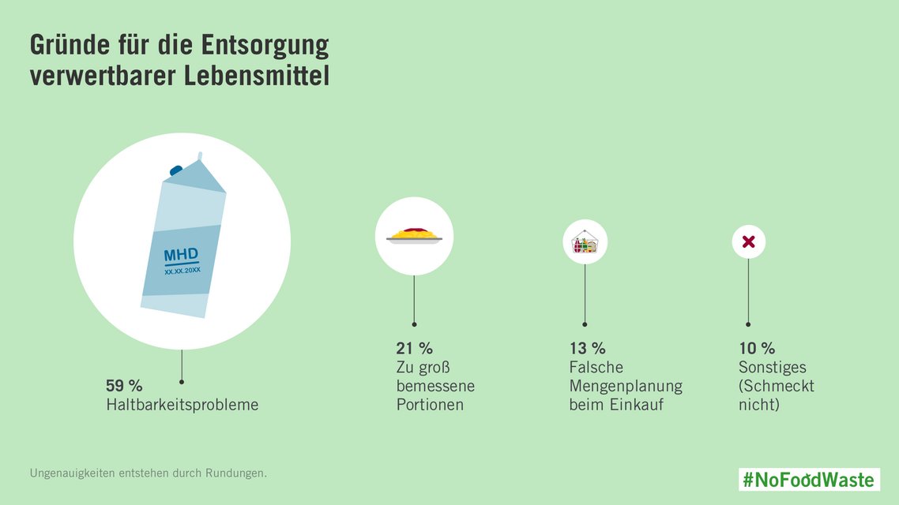

RATGEBER
Lebensmittel benötigen entlang ihrer Wertschöpfungskette viele Ressourcen wie menschliche Arbeitskraft, Landfläche, Wasser und Energie. Trotzdem wird einiges davon - auch noch genießbare Lebensmittel - weggeworfen.
Weltweit landen rund ein Drittel aller produzierten Lebensmittel im Müll – das entspricht jährlich rund 1,3 Milliarden Tonnen an Lebensmitteln. Gerechnet bei einem Pro-Kopf-Konsum von ca. 632 kg Lebensmitteln pro Jahr (Quelle: Statistik Austria, Stand August 2022) könnte man damit die gesamte Bevölkerung Europas (751 Millionen) mehr als 2,5 Jahre lang ernähren!
Auch in Österreich werden geschätzt jährlich zwischen 800.000 und einer Million Tonnen Lebensmittel weggeworfen. In Österreich belaufen sich etwa 20 % des persönlichen CO2-Fußabdruckes auf die Produktion und den Konsum von Lebensmitteln. Neben Abfällen im Anbau, in der Weiterverarbeitung, im Handel oder auch in der Gastronomie, werden auch in österreichischen Haushalten viele Lebensmittel verschwendet. Die Gründe hierfür sind unterschiedlich. Für 50% der Haushalte ist der Hauptgrund z.B. Zeitmangel, dahinter folgen Probleme wie falsche Lagerung, fehlende Kochideen oder ein zu hoher Aufwand bei der Verarbeitung. Dadurch werden rund 16% der CO2-Emissionen für unsere Ernährung unnötig ausgestoßen, die Klimakrise befeuert, kostbare Ressourcen wie Wasser und Energie verschwendet oder auch Tiere für den Müll geschlachtet. Wer Lebensmittelabfälle reduziert, spart somit nicht nur Geld, sondern kann auch einen wertvollen Beitrag für Umwelt, Tiere und Klima leisten!
Lebensmittelabfallvermeidung ist zudem auch aus ethischen bzw. hinsichtlich Gerechtigkeitsaspekten relevant. Die Welthungerhilfe geht davon aus, dass Lebensmittelverschwendung weltweit drastische negative Auswirkungen auf die Hungersituation in Ländern des globalen Südens hat.
Viele Lebensmittel werden schon bei der Herstellung, beim Transport oder der Lagerung verschwendet. Hier muss die Politik verbindlichere Regelungen erlassen. Aber auch jede*r Einzelne*r kann ohne viel Aufwand aktiv werden gegen Lebensmittelverschwendung und die Verschwendung von Ressourcen.
 Wir alle haben es in der Hand, Lebensmittelabfälle zu vermeiden – diese Tipps helfen dabei!